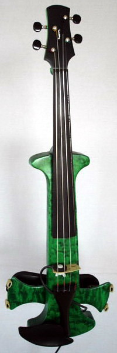
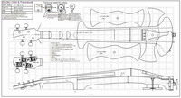

Select your area of interest:
Home* Lap Steel* 3 String Guitar* "Regular" Guitar* Violin* Bass*
Banjo* Mandolin* Ukulele* Home Recording* Links
Violin related information:
Bluestem Electric Violin Construction Guide
*****************************************
Quiet violin with optional bridge transducer
Click HERE to enlarge and rotate this instrument.

This instrument resulted from my wish to have a relatively silent violin to use for quiet practice, but could also be used as an electric when desired. I had already developed the bridge transducer to use on my conventional violin, so the only thing I needed was a quiet violin to attach it to. I wanted an instrument that had minimal weight, but retained all of the reference points of my regular instrument and would also accommodate a regular shoulder rest. I had fitted a few sets of tapered violin pegs in the past, but wanted to try geared tuners on an instrument. A check of my spare parts box yielded a fingerboard, tailpiece, bridge. The Ukulele tuners (available through various on-line suppliers) were perfect for this project because their lightweight construction and short posts ensured an instrument that would not be overly heavy and would also be properly balanced. After gathering the required materials together, I proceeded to the drawing of the plan. The CAD drawing process was relatively easy, using all the dimensions of my acoustic instrument and adapting them to a lightweight skeletal frame.
The following information is presented for you to use as an overall guide if you wish to build a similar instrument and/or bridge transducer. The construction notes that follow are REALLY basic, and assume you have some sort of skills in woodworking and basic soldering. They are meant to give you a quick outline of the construction process and are not meant to be an exhaustive essay on the building of either item. Read them if you wish, otherwise wing it.
Do I sell completed electric violins or transducers? No. I'm presently occupied with all the work I can handle, so you're on your own. Otherwise, you can have any competent luthier build them for you. But that wouldn't be any fun at all, would it?
OBLIGITORY STANDARD DISCLAIMER
As always, I assume no responsibility for the use of this information, standard safety practices must be adhered to, and all personal protective equipment must be used where it is applicable. Please remember that woodworking is a potentially dangerous endeavor. The machines and tools used to work with wood, metal, and other materials can be hazardous if used in an unsafe manner. Please read all machinery operation manuals and follow the safe working practices outlined within them.
*****************************************

Click HERE for violin and transducer plan in PDF format.
*****************************************
Quiet Violin
Violin features and construction notes:
You will need:
- Use for quiet practice or as an electric violin when the transducer is attached to the bridge
- Conventional reference points to facilitate easy transition to playing a skeletal frame instrument
- Geared tuners for easy and accurate hassle-free tuning. No fine tuners needed!
- Bridge transducer installs or removes in seconds
- Lower body section rotates to hold a standard shoulder rest at your preferred angle
- Low overall weight coupled with good instrument balance (23 ounces or 652 grams without shoulder rest)
5 feet of 2-1/2” by 2” hard maple
1/8” by 8” by 24” figured maple top wood (also used for lower body section)
Black 3/32” guitar headstock overlay (save the waste pieces to make the transducer)
1 set of economy Ukulele tuners with black plastic buttons; these were chosen for their minimal weight and short string posts
Violin finger board blank
Violin nut
Bridge
Tailpiece with end fastener
Endpin
Strings (don’t skimp here! Use a good synthetic core string set. Otherwise you’ll be sorry…)
Do I need to tell you that you need a bow and lightweight case? I hope not. I currently use a Coda Aspire that I find to be satisfactory.
1. LAYOUT CENTER SECTION
Mark Locations for nut, fingerboard, bridge, and instrument ends on top of the 2-1/2” wide by 2” by 24” center section.
2. PEGHEAD SLOPE
Place the center section on its side and draw the complete side profile. Cut the angled surface that extends from the nut to the end of the blank to form the peg head top slope.
3. TOP PROFILE
Orient the center section top side up and draw the peg head shape on the top surface of the sloped area. Place nut and fingerboard on top of center section at the line where the peg head slope begins and mark sides of the finger board directly on board. Extend these lines through body area and cut out slightly oversize, saving cut-off pieces. Plane body and neck sides to these lines, stopping at the nut position line. Leave peg head area full width at this time.
4. SIDE PROFILE
Position the center section on its side once again and cut all of the remaining side profiles. The cut off pieces saved when cutting the side profiles can be taped temporarily in position to make it easier to cut the side profiles.
5. BODY WINGS
Trace wing side profiles on edge of 2-1/2” wide by 2” thick by 32” long using body center section for a pattern. Cut these out slightly oversize. Sand the front area of the wings where they will meet the center section. This area will be difficult to sand after the wings are glued in position. Glue the wings to the body center section. Keep the top arched surfaces of the wings aligned with the top of the arched center section. A thin contrasting veneer can be used between the center section and wings if you don’t have the ability to produce perfectly flat gluing faces. Trim the body profile slightly oversized; it will be finished to the correct profile after the top cap wood is added. The body can have large weight reduction holes bored through the body wings and center section before adding the top cap if desired. Any steps taken toward minimizing total weight are good.
6. TEE NUT
The tee nut is added at the correct location PRIOR TO adding the figured top cap wood. It’s easy to forget this, so it gets its own section here. Drill the hole for the screw, counter bore at least 1/2" deep for the tee nut flange and body and install it. Test fit the screw to make certain that it threads in easily. Carefully add a wood plug in the counter bore hole at this time to prevent glue from entering the thread area when the top cap is added.
7. ADD CHAMBERS AND BORE HOLES TO REDUCE BODY WEIGHT The body shown had several 1/2" and 3/4" holes bored in the wing sections to reduce the overall instrument weight. The rear wing surfaces were covered with 1/8" Birdseye maple caps to cover the areas where the holes were bored. The center areas of the body center section should also have large portions of excess wood removed to reduce weight. These open areas were sanded and stained prior to adding the top cap wood on the example instrument, as it would have been difficult to do this after the cap wood was added.
8. ADD FIGURED WOOD CAP
Sand the top surface of the body where the 1/8” figured wood cap will be added. Apply the oversized top cap with a clamping caul made from 3/8” plywood covered with a 1/4” cork face. Cover the rear wing surfaces with 1/8" Birdseye maple caps to cover the areas where the holes were bored if you have not done so already.
Cut the body to its final shape and sand the top cap, sides, and rear wing caps after the glue has dried.
9. PEGHEAD OVERLAY
Fasten the fingerboard and nut temporarily in position using blue painter's masking tape. Draw the peg head shape on 3/32” ebony. Trim it slightly oversize and place it over the peg head area of the neck, butting it against the nut. A slight angle should be sanded on the edge that butts against the nut to ensure a good fit. Drill two small holes at two of the tuner post locations to pin the overlay to the peg head using small brads. Make a clamping caul shaped like the peg head and cover it with 1/4" cork. Drill holes in the caul where the brads will be located. Glue the overlay to the peg head face using a thin coating of Titebond glue. Remove the fingerboard and clean up excess glue. Sand the peg head profile to shape when dry.
I decided to add a small mother of pearl f hole to the overlay as a nod to "proper" violin design.
10. TUNERS
Plane the flat portion of the peg head rear surface to a final total thickness of 1/2" and drill the tuner post holes from the front face. Drill a 1/4” guide hole through a hardwood block and clamp this block over the post locations on the ebony face to prevent chipping of the peg head face when drilling the holes. Precaution is used here because string post bushings supplied with the tuners are not used. They are not necessary with the low tension of violin strings and would add unnecessary extra weight.
11. SHAPE BODY
Shape the rear body contours. A drill-held 2” drum sander is useful to shape the curved areas, with a random orbital used for flat areas and to refine all of the sanded surfaces. Any additional desired contours can be cut and sanded at this time for both weight reduction and desired look. All of the body edges should be nicely radiused to eliminate square edges.
12. NECK
Spread two SMALL DABS (1/8”) of glue in the center of the neck surface, butt the fingerboard to the headstock overlay, and clamp in position. The idea is to temporarily attach the fingerboard while the neck is being shaped. Clamp the instrument upside down and form the neck shape CAREFULLY. It helps to have an instrument that you can compare your progress with. Work slowly and form heal, rear contour, and thumb stop areas as perfectly as you can using a rotary hobby tool witted with a 3/4" diameter 80 grit sanding drum. You want to form the neck as accurately as possible. Most people tend to error on the heavy side on their first instruments, so work with this in mind. Work to the edge where the fingerboard is glued and blend the neck and fingerboard sides together. Perfection isn't necessary here, as the fingerboard will be removed to sand and stain the body. The area where the thumb stop blends to the rear face of the peg head will also require a delicate touch.
Pop the fingerboard off and sit down with 150 grit sandpaper and smooth the contours and marks left by the drum sander. This really goes a lot quicker than it seems like it would. Sand until NO marks are visible. ANY imperfections WILL be visible after finishing. Follow your preliminary sanding with 180 and then 220 grit paper. The neck shape is crucial to the finished instrument’s playability, so take your time with it.
13. LOWER ADJUSTABLE BODY SECTION
The adjustable lower body section is made from a double layer of the top cap wood. It is joined to the main body with a screw inserted through a circular wood spacer and fastens into the previously installed tee nut. The outer edges are angled to match the fingers of the shoulder rest that you will use. Do not angle all the way to the ends to ensure that the shoulder rest mounting fingers will not slide off the ends. This section can be rotated to achieve a comfortable playing position before tightening the mounting screw.
14. FITTINGS
Drill the hole for the end button and taper for a tight fit. Add the tuners to the peg head. Position the tailpiece and use OLD or REALLY CHEAP strings to assist in fitting the bridge to the top of the body at the correct location. Trim the bottom of the bridge and/or trim the bridge top to achieve the correct string height over the finger board. Since there are no F holes to assist in bridge positioning, you may desire to add small position markers just outside the bridge feet to use as reference points. These should be located so the actual string length from the nut to the bridge is 12-7/8". Very small abalone dots added before finishing would be nice here. I added a small mark with a fine tip permanent marker to locate the bridge feet.
Add the chin rest. It may be necessary to shape the body and/or the base of the chin rest to obtain a proper fit.
Do resist the urge to play until the instrument is finished and fitted with good strings! Speaking of which…
15. FIT AND FINISH
If and when you’re happy with your creation you may disassemble it completely for finishing. The fingerboard is popped off first. Sand the entire instrument with progressively finer grades of sandpaper until you have worked down to 220 grit. The finished appearance will only be as good as your prepared surface. ANY flaws or imperfections will be made obvious when finish is applied, so take extra care to obtain perfection before finishing. The instrument shown was stained prior to final assembly.
Permanently attach the finger board. I used two SMALL beads of Titebond down each side, staying slightly to the inside to avoid glue squeeze out. Wrap the board tightly with blue masking tape to fasten it temporarily in position until the glue dries. If you have any doubts about squeeze out apply blue painter's masking tape to any surface that may get glue on it.
After the fingerboard glue has dried remove the tape and sand the neck and fingerboard edges to blend them perfectly together.
Mask the entire fingerboard off with blue painter’s masking tape, and apply finish. My recommendation is three coats of wipe on satin finish polyurethane. If you work in a quiet, dust-free area and use a tack cloth before each coat is applied then sanding between coats should be unnecessary. Otherwise, lightly sand with #400 or #0000 steel wool before each application of finish.
16. TEST DRIVE
Allow the instrument to dry for several days before final assembly. A light rubdown with #0000 steel wool will knock down any dust that may have adhered to the finish while drying. Put it all back together, using good strings this time around. Coat the base of the bridge with rubber cement and let it dry before stringing up. This will prevent string tension from pulling the bridge sideways on the flat surface of the body. (This is an old trick I found from banjo bridge mounting, and works great in this application.)
Take it for a long test drive. The transducer can be added if you desire to plug in, otherwise you’re done. I drilled an extra 3/16" diameter hole between the heart and bass side bridge eye to accommodate the transducer attachment. If you use a taller bridge, then the transducer will fasten through the existing bridge eye.
*****************************************
Bridge Transducer
The transducer notes below cover the building of an extremely lightweight piezo-based bridge transducer that can convert ANY violin into an electric in seconds. I have tried many designs and I will say that this design sounds as good as any piezo-based transducer I've heard, on par with one of the commercially available sensor-in-bridge pickups that I have fitted to a few instruments. I lucked out in my experiments and came up with something that sounds good after a few failed initial attempts...a major accomplishment using this material. It uses a piezo disk salvaged from a musical greeting card (Yes, you can use the oft-cited Radio Shack piezo disk ripped from their little plastic case with two leads sticking out...)with a 10 foot length of special small diameter low capacitance output cable soldered to it, and then sandwiched between two thin shielded ebony faces. The circular transducer has a hole through the center and attaches in seconds to the bridge face with a low mass nylon screw and wing nut.
Bridge transducer features and construction notes:
You will need:
- Transducer installs and removes in seconds
- Extremely low mass to minimize interaction with the sound produced by the string and instrument
- Inexpensive and easy to make
- Low capacitance output cable to minimize the edginess inherent in piezo-based transducers
- DO use a preamp if you want any high impedance transducer to sound good. (I'm happy with my $30 Behringer combo preamp/D.I.)
(2) 1" by 1" by 3/32" ebony scraps from peg head veneer application
(1) Piezo disk extracted from a musical greeting card
Small amount of black 60 or 90 minute working time two-part epoxy
10 feet of George-L's 1/8" diameter instrument cable
1" by 1" piece of adhesive-backed copper foil for shielding the "hot" side of the transducer sandwich
1/4" solder connection male plug
Assorted tools, 25 watt pencil soldering iron, small diameter rosin core solder, small rotary hobby tool fitted with a 3/4" sanding drum
1. Strip 1/2" of insulation from the cable; unravel the outer braid into two pieces on opposite sides of the cable end. Remove half of the strands from each side to eliminate bulkiness.
2. Cut a 1/4" square notch in the bottom edge of both 1" by 1" by 3/32" ebony squares to contain the solder joint.
3. Soldering the cable end to the disk comes next. Maneuver the wire ends to be perfectly positioned before soldering to the disk. You will want to position the cable so the "active" side of the disk will be perfectly flat when the transducer is completed. (That's important!) The piezo disk is easily damaged by excessive heat, so solder quickly using good technique. It's OK to practice this a few times, and you may ruin a disk getting the hang of working with these. Apply a small pad of solder to the disk where the wire will attach, tin the wire end, and solder the two together using as little heat and as little time as necessary. Solder one of the braided pieces to the rear brass surface of the piezo disk. The other braid will protrude for later attachment to the copper foil shielding surface. Solder the tip of the stripped center conductor to the silver surface on the other side of the disk
4. Fit the two ebony pieces to the disk with no gaps, with the notches over the solder joints. You may need to carve a little out on the inside edges of the notches to get them to fit perfectly. NOTE: Figure out a way to indicate which side the brass backing disk faces. This is the ground side, and the copper foil will be applied to the OPPOSITE or active side. This is important! Coat the mating surfaces with epoxy, place them together and weight or clamp the completed assembly over waxed paper until dry.
5. Drill the 3/16" hole through the center of the square and sand both sides flat. Draw out the circular shape on the finished assembly and sand to these lines, preferably with a small rotary hobby tool fitted with a 3/4" sanding drum. The edge of the brass disk will show...that's no problem.
6. Apply the self-adhesive copper foil to the "active" side of the assembly opposite the brass surface. (You remembered to mark the correct face, didn't you?) Bend the foil down over the small exposed braid area, solder the braid to it, trim, and coat this with epoxy to make an attractive joint.
7. Solder the plug on to the other end of the cable, making sure the center cable conductor is soldered to the center lug of the plug.
8. Mount the transducer with the copper foil covered "active" surface against the bridge face with a #8 by 32 by 3/4" long nylon screw and nylon wing nut and play away! My violin sounds much better with the transducer mounted towards the tailpiece, so you should experiment with placement on your instrument. You should have no hum, good signal strength, and a very pleasant tone, especially if you feed the transducer output to a pre-amp to match the high impedance of the piezo material to the input stage of your amp.
*****************************************
Please visit my other website designed to provide information on musical instrument construction. There are free plans as well as construction tips and techniques available at the present time.
Rudy's Sketchbook of Musical Instrument Plans, Ideas, and Inspiration
*****************************************
If you desire to contact me about Bluestem Strings products:
Due to scoundrelous spammers actively mining sites for e-mail addresses, I'm forced to include the following text version of my e-mail address meant to confuse the automated robo-search of websites for e-mail addresses. Please e-mail me at:
rcordle (substitute the at symbol here) fastmail (substitute the dot here) fm
Please include "Bluestem Info Request" in the subject line, Thanks!